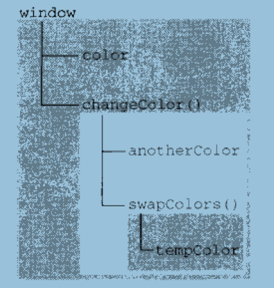
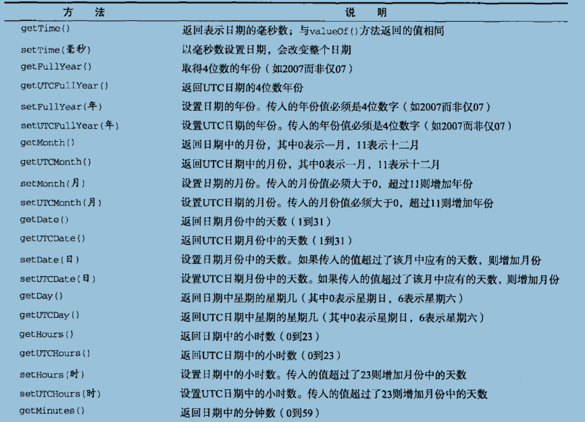
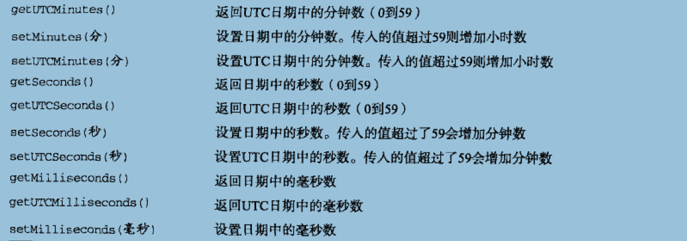

JavaScript高级程序设计
在javascript中，我们可能很少会去用到 Label 语句，但是熟练的应用 Label 语句，尤其是在嵌套循环中熟练应用 break, continue 与 Label 可以精确的返回到你想要的程序的位置。
Label 语句，按书本上说的语法是：
Label: statement
如： begin: for (var i = 0; i < 10 ; i++ ){
alert(i);
}
举一个比较典型的例子，看完后即明白 Label 的应用：（未添加 Label）
对比使用了 Label 之后的程序：（添加 Label 后）

内部环境可以通过作用域链访问所有的外部环境，但外部环境不能访问内部环境中的任何变量和函数，这些环境之间的联系是线性、有次数的，每个环境都可以向上搜索作用遇见，以查询变量和函数名，但任何环境都不能通过向下搜索作用域链而进入另一个执行环境，对于这个例子中的swapColors（）而言，其作用域链中包含3个对象，swapColors（）的变量对象、changeColor（）的变量对象和全局对象变量，swapColors（）的局部环境开始时会现在自己的变量对象中搜索变量和函数名，如果搜索不到则再搜索上一级的作用域链，changeColor（）的作用域链中只包含两个对象：他自己的变量对象和全局变量对象，这也就是说，他不能访问swapColors（）的环境。

